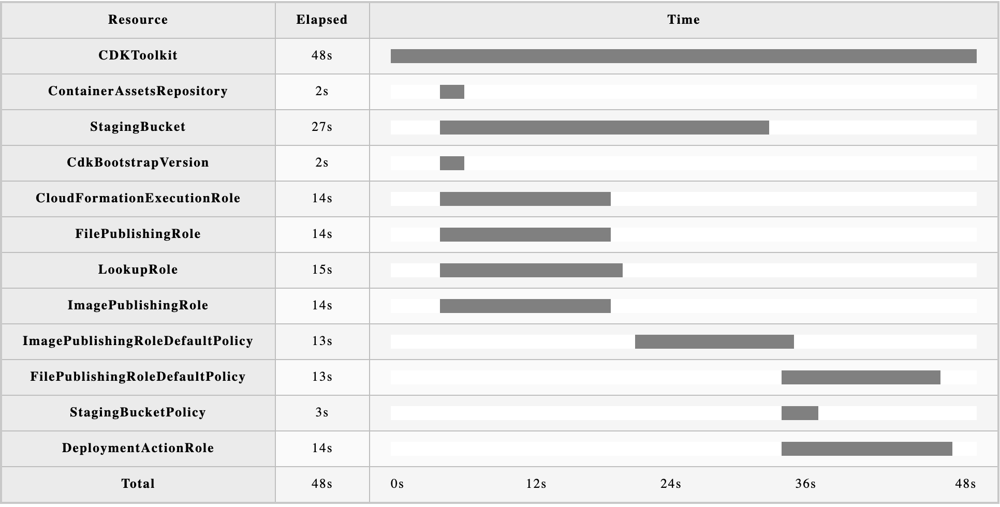

Stack commands¶
These commands work with deployed CloudFormation stacks. All of them take -p (--profile) and -r (--region). Every command also takes --debug and --no-colour, and prints its usage with -h (--help).
The command output on this page is illustrative. It needs a real AWS account, so the names, IDs and times in your output will be different.
deploy¶
cfnrain deploy <template> [stack] [changeset] creates or updates a stack through a change set. Getting started explains the full flow, parameters, config files and change sets.
# Deploy, with a prompt for each parameter and a confirmation
cfnrain deploy app.yaml app-dev
# Deploy without questions
cfnrain deploy app.yaml app-prod -y -c prod.yaml
# Create a change set and stop
cfnrain deploy app.yaml app-prod --no-exec
Getting started lists every deploy flag.
ls¶
cfnrain ls lists the stacks in the current region. Add -a (--all) to list the stacks in all regions.
Give a stack name to see a summary of that stack and its change sets. With -a, the summary has more detail.
-c (--changeset) works with change sets. With no arguments it lists the stacks that have change sets. With a stack and a change set name it shows that change set.
list is an alias for ls.
cat¶
cfnrain cat <stack> prints the template of a deployed stack. cfnrain formats it like fmt does.
| Flag | What it prints |
|---|---|
-t, --transformed |
The template after CloudFormation processed transforms such as AWS::Serverless-2016-10-31 |
-u, --unformatted |
The template as CloudFormation stores it, with no formatting |
-c, --config |
A config file with the stack's parameters and tags, in the format that deploy --config reads |
Use -c to copy the settings of one stack to a new deploy:
logs¶
cfnrain logs <stack> shows the events of a stack and its nested stacks. By default it shows only the events with a useful message, such as a failure reason. log is an alias.
Give a logical resource ID to see the events of one resource:
| Flag | What it does |
|---|---|
-a, --all |
Show all events, also the ones without a useful message |
-l, --length |
Show only this number of events |
-d, --days |
Show only the events from the last number of days |
-s, --since-user-initiated |
Show only the events since the last User Initiated event |
-c, --chart |
Write an HTML Gantt chart of the most recent stack operation to standard output |
The chart shows how long each resource took. Save it to a file and open it in a browser:

watch¶
cfnrain watch <stack> shows the status of a stack while it changes. Use it for a deploy that another tool started, or after deploy --detach.
If the stack is not changing, watch stops with an error. Add -w (--wait) to wait until a change starts.
rm¶
cfnrain rm <stack> deletes a stack and waits until the delete completes. It asks you to confirm first. remove, del and delete are aliases.
If the stack has termination protection, cfnrain asks whether to turn it off. With -y it turns it off without a question.
| Flag | What it does |
|---|---|
-y, --yes |
Do not ask questions |
-d, --detach |
Start the delete and exit |
--role-arn |
The IAM role that CloudFormation assumes to delete the stack |
-c, --changeset |
Delete a change set instead of a stack: cfnrain rm -c <stack> <changeset> |
--experimental |
Needed when a bucket in the stack has Metadata.Rain |
stackset¶
cfnrain stackset works with CloudFormation stack sets. It has three subcommands. All of them take --admin to use delegated administrator permissions.
stackset deploy¶
cfnrain stackset deploy <template> [stackset] creates or updates a stack set. If you do not give a name, the stack set name is the template file name without its extension.
cfnrain stackset deploy guardrails.yaml org-guardrails \
--accounts 111111111111,222222222222 \
--regions us-east-1,eu-west-1 \
--params Env=prod
The config file can set the stack set and the instances, as well as parameters and tags:
Parameters:
Env: prod
Tags:
Team: platform
StackSet:
description: Organization guardrails
StackSetInstances:
accounts:
- "111111111111"
regions:
- us-east-1
Accounts and regions from the flags replace the values from the file. Tags and parameters from the flags are merged with the values from the file. -i (--ignore-stack-instances) updates the stack set and does not add or remove instances. See test-config.yaml for a full config file.
Like deploy, stackset deploy packages the template first, and creates the artifact bucket when it needs one.
| Flag | What it does |
|---|---|
--accounts |
The accounts to create stack set instances in, separated by commas |
--regions |
The regions to create stack set instances in, separated by commas |
--params |
Parameter values, in the format key1=value1,key2=value2 |
--tags |
Tags, in the format key1=value1,key2=value2 |
-c, --config |
A YAML or JSON config file, as shown above |
-i, --ignore-stack-instances |
Update the stack set and do not add or remove instances |
-y, --yes |
Do not ask for confirmation |
-d, --detach |
Start the operation and exit |
--admin |
Use delegated administrator permissions |
--s3-bucket, --s3-prefix, --s3-owner |
Control where uploads go. See Artifact bucket. |
stackset ls¶
cfnrain stackset ls lists the stack sets in the region. Give a name to see its instances and its last 10 operations.
-a (--all) lists the stack sets in all regions. With a name, it shows more detail.
stackset rm¶
cfnrain stackset rm <stackset> deletes a stack set. If the stack set still has instances, cfnrain lists them and asks which ones to delete. Enter 0 to delete all of them.
-d (--detach) starts the delete and exits.
cc (experimental)¶
cfnrain cc deploys templates with the Cloud Control API instead of CloudFormation. Every cc command needs -x (--experimental).
cfnrain cc deploy -x app.yaml app-dev
cfnrain cc state -x app-dev
cfnrain cc drift -x app-dev
cfnrain cc rm -x app-dev
| Subcommand | What it does |
|---|---|
cc deploy <template> <name> |
Creates or updates the resources. It refuses resource types that the Cloud Control API does not fully support. |
cc state <name> |
Prints the state file |
cc drift <name> |
Compares the state file with the live resources, and offers to fix the difference |
cc rm <name> |
Deletes the resources and waits until all the Cloud Control API calls complete |
cc keeps a state file in the artifact bucket at deployments/<name>.yaml. If a deploy stops and leaves a lock, cc deploy -u <lockid> removes the lock.
| Flag | Subcommands | What it does |
|---|---|---|
-x, --experimental |
all | Confirm that you know cc is experimental. Required. |
--s3-bucket, --s3-prefix |
all | The bucket and prefix of the state file and the uploads |
--s3-owner |
cc |
The account that owns the bucket |
--params |
deploy |
Parameter values, in the format key1=value1,key2=value2 |
--tags |
deploy |
Tags, in the format key1=value1,key2=value2 |
-c, --config |
deploy |
A YAML or JSON file with parameters and tags, as for deploy |
--ignore-unknown-params |
deploy |
Ignore parameters that the template does not declare |
-u, --unlock |
deploy |
Remove the lock with this ID and continue |
-y, --yes |
deploy, rm |
Do not ask questions |
State files expire in buckets that cfnrain creates
The artifact bucket that cfnrain creates deletes all objects after 7 days. That includes the cc state files. Use --s3-bucket with a bucket that keeps its objects.